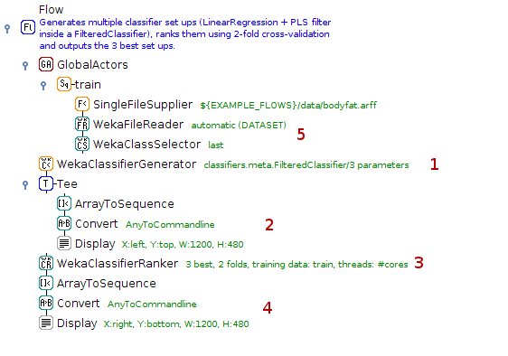
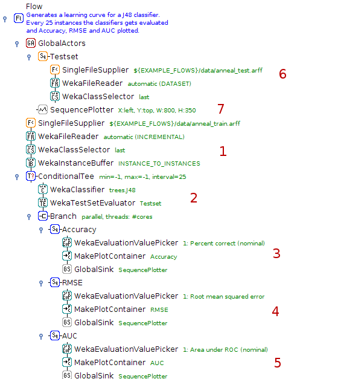
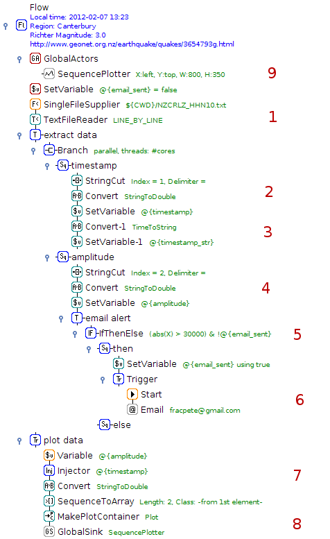
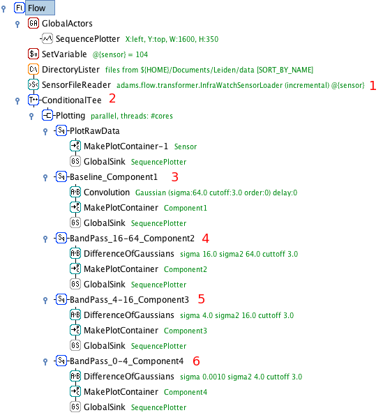
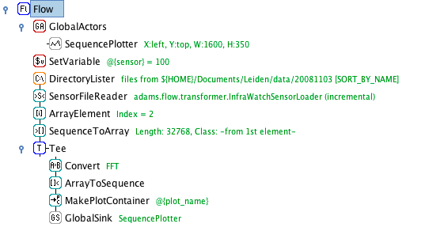
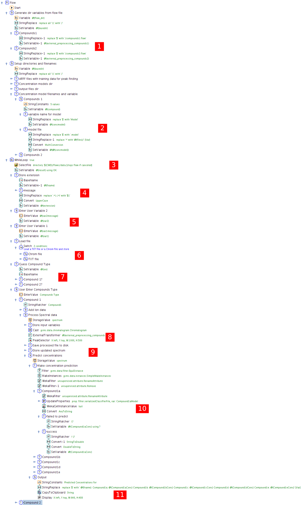

Examples
Choose a category of annotated examples:
Workflows don't have to be complex to get the job done. But even flows with only 10 actors already help documenting your work, preserving all steps in volved in generating the results. These flows are a good introduction into the many actors that ADAMS already has on offer.
Absolute simple flow that merely displays the Hello World string.
Cross-validates a classifier (J48) on a single UCI dataset.
Reads in set ups of WEKA classifiers stored in a text file and evaluates each against all datasets in a directory.

- Read in text file with classifier set ups, line by line, and store set up in in variable attached to the global actor (see 5)
- Iterate over all datasets in directory and load them, one after the other
- Drop datasets that don't meet required capabilities
- Cross-validate classifier defined in 5 on datasets and output results
- The classifier definition used in cross-validation, with variable attached to set up (gets updated when the variable changes its value)
Adds datasets located in a directory to a pre-defined WEKA experiment, runs the experiment and displays the evaluation.

- Lists datasets in specified directory
- Executes the pre-defined WEKA experiment (containing only classifier set ups, no datasets) using the datasets arriving at its input
- Performs the evaluation of the experiment
Generates a parameter sweep for multiple parameters of WEKA classifiers, ranks these using 2-fold cross-validation and subjects the top 3 to a proper evaluation.
- Generates the parameter sweep of 3 parameters: ridge of LinearRegression, # of components of PLS filter and type of PLS algorithm
- Outputs all the generated setups
- Ranks the performance of the classifiers using 2-fold cross-validation, outputs the top 3
- Displays the set ups of the top 3 classifiers
- The global training data
A picture says more than a thousand words. This is even more so true for statistics. Visualizing results, generating plots from data is an integral part of ADAMS. Check out what ADAMS can do in the visual department.
Generates and visualizes a learning curve for J48, a non-incremental WEKA classifier. The classifier gets trained every 25 instances and evaluated against test set and Accuracy, RMSE and AUC gets plotted in one plot.
- Read in dataset incrementally and buffer incoming data
- Every 25 instances, build classifier and evaluate against test set (defined as global actor, see 6)
- Obtain accuracy and create a plot container for Accuracy plot sequence
- Get root mean squared error and turn it into a plot container as well, this time for the RMSE sequence
- Retrieve AUC (area under curve) statistics and generate plot container for AUC sequence.
- Sequence of actors for reading in a test set
- The plot for all three statistics
Seismic data was retrieved using the Geonet client.

- Read text file, line by line
- Extract Unix timestamp, convert into double and store as variable
- Extract amplitude, convert into double and store as variable
- Turn timestamp and amplitude into a double array
- Generate data structure for plot
- The global plot
Seismic data was retrieved using the Geonet client. Apart from visualizing the data, this flow also sends out an email alert if a tremor exceeds a certain strength.
- Read text file, line by line
- Extract Unix timestamp, convert into double and store as variable
- Convert timestamp into human-readable representation for email
- Extract amplitude, convert into double and store as variable
- Check whether incoming token (amplitude) is larger than threshold and email hasn't been sent yet
- Note that email was sent and send email with information about event (time/date and amplitude)
- Turn timestamp and amplitude into a double array
- Generate data structure for plot
- The global plot
Visualizing sensor data of the InfraWatch project using the LEIA/ADAMS framework:
Illustration of sensor data processing with the ADAMS/LEIA workflow engine.
Demonstration of the ADAMS/LEIA workflow engine on traffic sensor data.
Publication
Knobbe, A., Blockeel, H., Koopman, A., Calders, T., Obladen, B., Bosma, C., Galenkamp, H., Koenders, E., and Kok, J.: InfraWatch: Data Management of Large Systems for Monitoring Infrastructural Performance. IDA Proceedings (2010). [pdf]
ADAMS' efficient token-passing architecture makes it ideal to handle streams of data. It is also very easy to extend. In these examples, we introduce new actors for several signal analysis techniques, and show how we can quickly build and test workflows to analyse time series data.
Convolution - Finding the signal in the noise
Sensor data is often noisy and complex. Here, we introduce an actor for convolution, an operation that transforms the data into something more useful.
First, we convolute the signal with a Gaussian response function (or kernel) to obtain a much cleaner signal.

- Retrieve data files from the given folder. Emits the files as tokens.
- Load and interpret the files and emit [timestamp,sensorvalue] tokens for every new timestamp.
- Branch actor: each token is sent to three subflows for further processing.
- This branch simply plots the data. Timestamp and sensor value are mapped straight to an X and Y coordinate, [X:timestamp,Y:sensorvalue], then sent to the plotter.
- Visualize the used kernel (here, a Gaussian kernel). Emits values to plot the kernel, centered on the received timestamp.
- Convolute the received data with the kernel. The agent buffers the last N tokens (N=kernel width), and emits the convoluted data points.
- Global plotter for all data. Receives tokens sent to all GlobalSink actors linked to it.
Changing the width of the kernel allows us to focus on events occurring on different time scales. Simply copy-paste the last two branches and change the kernel widths.

Convoluting the same signal with a whole range of different kernel widths creates a so-called scale space, a space of signals sensitive to events at different time scales.

- Copy-paste the convolution branches
- Increase the kernel width. Here, we double it each time
Decomposition of a sensor signal into components displaying events occurring on different time scales. Detecting transient events when these events occur on different timescales in data prone to baseline shifts can be very tricky. Through scale-space decomposition, we decompose the raw signal into its natural components, and use those to detect events. This is done by taking the scale space and establishing 'regions' of the scale space where events of a certain time scale take place. Each region will be represented by a component, calculated by substracting the convolutions at either end of the region. The latter is also known as a `difference of Gaussians' filter, or band-pass filter. The sum of the components recreates the original signal.
- Sensor data is read and split into individual tokens as before
- The data is subsampled: only every 100th token is passed on
- The baseline of the data is created through convolution with a large Gaussian, only sensitive to large-scale events
- The first band-pass filter is applied. It takes the difference of the Gaussians of width 64 and 16. The result is sent to the plotter
- Second band-pass filter, for signals in the range sigma=[4,16]
- Third band-pass filter, for signals in the range sigma=[0,4]
Segmentation of time series data
A time series can be approximated by a piecewise linear function. This will result in a time series that is significantly smaller in size (disk space), and thus easier to store and process.
One way of approximating the signal is to begin a new line segment if the signal changes it's slope drastically. These points can be found by taking the 1st, 2nd, 3rd,... order derivative of the signal and start a new line segment for every zero-crossing of these derivatives. Instead of first calculating the convolution of a signal and then taking its derivative, we can achieve the same result by convoluting the signal with the derivative of the kernel used for convolution! Thus, we take the 1st, 2nd, 3rd,... order derivative of the Gaussian kernel, do their convolutions, and start a new line segment at any zero-crossings.

- Load and split the data into tokens as before
- Plot the raw sensor data
- Compute the third order derivative of the convolution and normalize it between -1 and 1 (for nicer plotting)
- Compute the second order derivative of the convolution and normalize it between -1 and 1
- Compute the first order derivative of the convolution and normalize it between -1 and 1
- The segmentation agent does the same as the above three branches, but only lets through a token (unaltered) if one of the derivates crosses zero
- Compute and plot the convolution with the base Gaussion kernel
- The plotter collects and plots all received tokens
Discrete Fourier Transform of sensor data
Applying discrete fourier transformation to the sensor data and displaying the frequency domain.
- Select the FFT Conversion in the Convert actor.
Large, complex flows that's where ADAMS' strength really lies. Its compact layout helps you not to lose the overview. Use loops, internal storage and much more to create solutions to your problems.
Performs pixel area classification (background or object) with a WEKA classifier trained on regions selected by the user.
- Parameter initialization
- Loading and pre-processing of image, storing in internal storage for future retrieval
- Extract image height and store it in a variable
- Extract and store image width in variable as well
- Interacting with the user, choosing pixel regions used as traingin data
- Generate training data for WEKA classifier
- Keep track of number of training instances
- Cross-validate (and output results) on training data only if there are at least 10 instances in the data
- Train the classifier, stored model on disk for future use and in the internal storage as well for performing the classification task
- Outer loop for traversing X (every 3rd pixel)
- Inner loop for traversing Y (every 3rd pixel as well)
- Extract pixel region around current X and Y, turn into a WEKA instance and make prediction
- Choose the color for background or object classification
- Update the pixel at the current position
- Display the modified image
Using the GC-MS extension modules, this flow performs a check on the sample type of GC-MS spectra and can send the analyst an email with the results. The spectra themselves are obtained from fruit and vegetable samples.

- Retrieve classification available classification labels
- List all chromatogram files
- Load and pre-process chromatograms one-by-one
- Show Total-ion-count and take a screenshot for report
- The same with the Baseline-ion-count
- Turn chromatogram into WEKA instance and predict the class label
- Determine the fruit/vegetable picture associated with the label
- Create a spreadsheet from the class distribution (top 5)
- Generate various output for the PDF report
- Generate PDF report
An application of data mining to fruit and vegetable sample identification using Gas Chromatography-Mass Spectrometry
Geoffrey Holmes, Dale Fletcher, and Peter Reutemann (2012). An application of data mining to fruit and vegetable sample identification using Gas Chromatography-Mass Spectrometry. Proceedings of the International Congress on Environmental Modelling and Software (IEMSS), Leizpig, Germany, 2012. [pdf]
Using GC-MS extension modules, this flow processes spectral data generating predictions for compounds. The user can correct the guessed peaks interactively, before the concentrations are calculated.
- Set up external flows, relative to current one
- Set up variables for serialized regression model files
- Prompt user to select spectra
- Determine extension of currently processed spectrum
- Prompt user to enter additional parameters
- Load file, executing subflow depending on file extensions
- Guess type of compound based on filename and prompt with pre-selected choice
- Process spectrum, guessing peaks using external flow
- Prompt user to inspect selected peaks, allow user to correct them
- Turn spectrum into WEKA data structure and make prediction on peak area for all compounds
- Assemble predictions, display them and copy them to the clipboard as well before proceeding with the next data file
Miscellaneous videos of various flows.
Using this webservice, any programming language can take advantage of WEKA as long as it supports SOAP
Shows how to utilize R from within ADAMS
Demonstrates how a flow can evolve from simple to complex
With these listeners you can eavesdrop on your flow, check out for instance where most of the CPU time is used or how often actors are executed
Note: the videos should only be considered educational, as some of the concepts in ADAMS have changed over time. E.g., global actors are now called callable, since they can appear in different scopes within the flow. Also, SingleFileSupplier and MultiFileSupplier got merged into the FileSupplier actor.